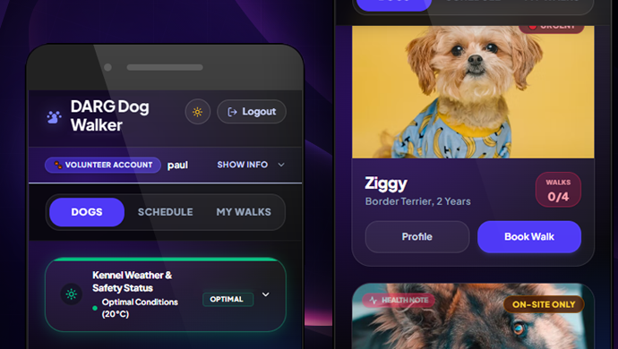
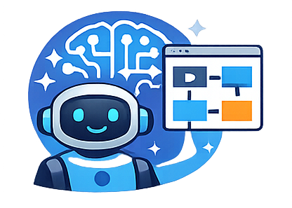
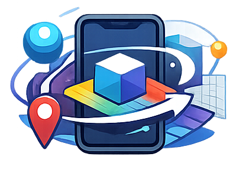

Mobile App · 2026
DARG Shelter Hub
A mobile-first volunteer scheduling platform that helps animal shelter staff and dog walkers coordinate exercise sessions, prioritising the dogs most in need of attention.
Cape Town, South Africa
An experienced UX/UI, Interaction & Systems Designer who designs thoughtful digital experiences across SaaS, fintech, telecom, e-learning, and mobile.
I design the systems, interactions and workflows that allow products to flow seamlessly across platforms, combining traditional UX thinking with emerging AI-assisted approaches to product creation.
My career started in print and evolved through interactive media, front-end development and agency work — arriving at a practice centred on user-centred product design for complex digital systems.
UX strategy across SaaS platforms, financial services, telecoms and e-learning — and working closely with engineers, product owners and senior stakeholders to ensure design intent carries through into working software - is what I do.
Today my focus is on the convergence of AI-assisted workflows, design systems and scalable interaction design — exploring how the latest UX tools are reshaping the design-to-development pipeline.
Producing motion-driven e-learning content for Laragh Courseware — animated modules using shared illustration libraries, voice over pipelines and and video output in After Effects. Concurrently exploring AI-assisted UX tooling: functional spec generation, rapid prototyping, user testing, token-driven design systems and design-to-development collaboration (exploring better ways).
Led UX/UI across the rain website and Android app. Created a comprehensive component-based design system in Figma. Introduced Lottie SVG animations for cross-platform interactive motion. Mentored designers and served as bridge between design and front/back-end development.
I led and mentored a team across financial services products. Full UX and front-end delivery for Sanlam (Go Cover, Concept Bluestar, Glacier), PSG and ASISA (and many others). I ran stakeholder interviews, wireframing, prototyping, front-end development and user testing.
Owned UX and UI delivery from discovery to execution across multiple brands. Led persona development, stakeholder interviews, wireframes and clickable prototypes. Embedded within a full Agile lifecycle. Clients: Sanlam, Red Bull, Appletiser, Weet-Bix, SASKO.
Heuristic evaluations and analytics reviews. Streamlined the booking journey and designed modular HTML email templates adaptable across hotel locations and email clients.
Led design and front-end development across intranets, websites, MIS platforms and business applications. Collaborated on an early SaaS CRM platform — a pivotal moment that redirected my trajectory toward usability-driven, product-focused UX thinking.
Created interactive software simulations in Macromedia Director and Adobe Flash — sparking an early interest in UX and how users interact, learn and delight in digital products.

Exploring how Claude, Figma MCP and token-driven tools can accelerate prototyping, specification and rapid iteration — while keeping decisions grounded in user-centred principles.
Building component libraries and token architectures that maintain consistency across complex multi-platform products — bridging the gap between design intent and production reality.

Expanding into After Effects motion design and XR/spatial UX — understanding how interaction pacing, motion narrative and spatial context change the way users experience information.
Projects illustrating the breadth of UX challenges I work across — from enterprise platform redesigns to consumer-facing mobile experiences.

A mobile-first volunteer scheduling platform that helps animal shelter staff and dog walkers coordinate exercise sessions, prioritising the dogs most in need of attention.
Full UX and UI design process for Sanlam's Go Cover insurance app — from discovery and journey mapping through to final UI, testing and handoff.
Designing and animating short-form explainer video content — translating technical scripts into visually clear, motion-paced learning experiences.
Designing and animating short-form explainer video content — translating technical scripts into visually clear, motion-paced learning experiences.
This will be a curated reel of motion design, interaction prototypes and UX walkthroughs is in production. In the meantime, this is just a placeholder.
Open to senior UX/UI roles, contractor engagements and product design collaborations. Based in Cape Town, available for remote.